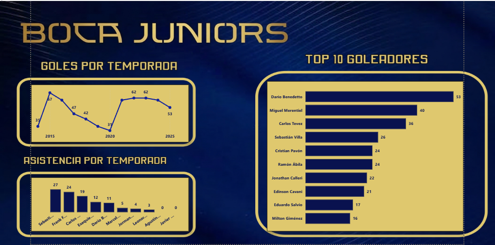
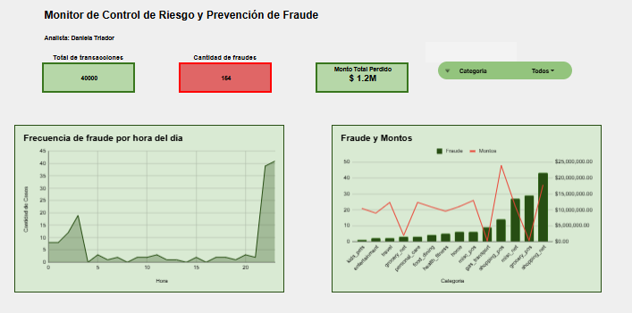
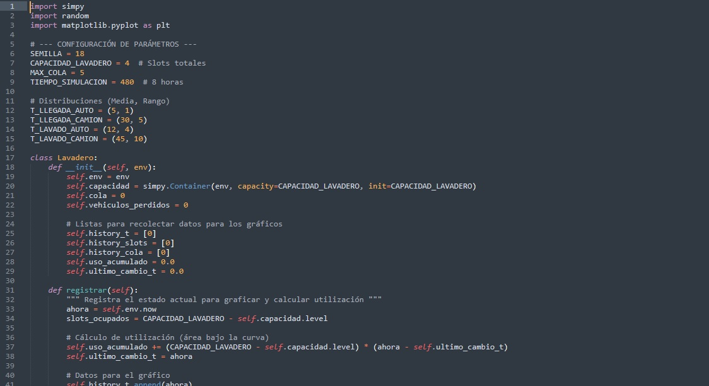
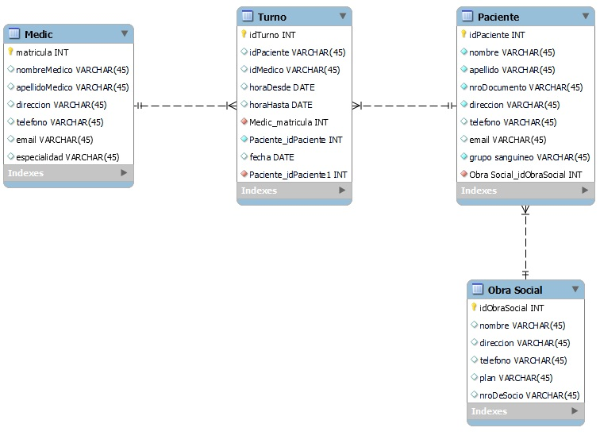
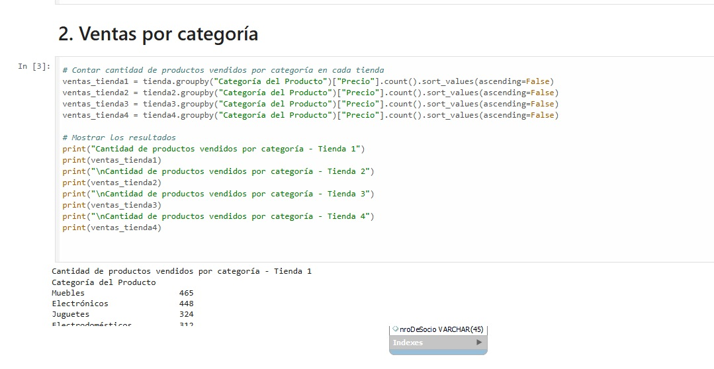
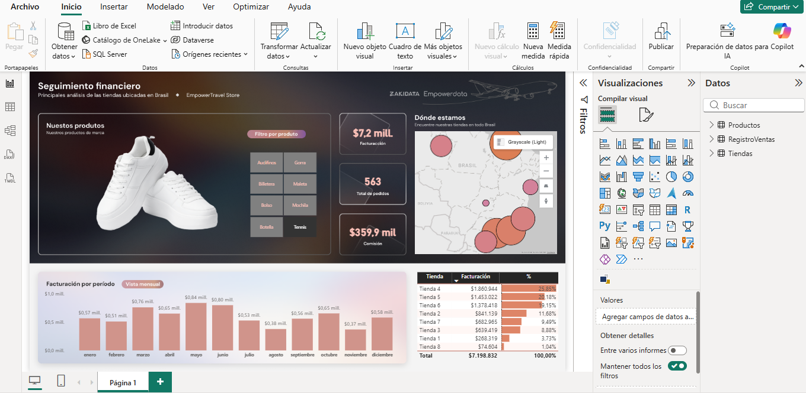

Analista de Datos y Data Scientist con formación en Ingeniería en Sistemas (en finalización) y experiencia práctica en análisis exploratorio de datos, desarrollo de pipelines ETL y modelado predictivo utilizando Python, SQL y Power BI. Especializado en transformar datos complejos en insights accionables que apoyan la toma de decisiones basadas en datos.
Modelo de Machine Learning para identificar clientes con alto riesgo de abandono utilizando técnicas de balanceo de datos y análisis exploratorio.
Tecnologías: Python, Pandas, NumPy, Scikit-Learn, SMOTE, Matplotlib, Seaborn
Ver proyecto
Analisis de rendimiento de jugadores del Club Atlético Boca Juniors durante las temporadas 2014-2025.
Ver en GitHub

Modelo de simulación de eventos discretos para analizar eficiencia operativa de un lavadero con demanda mixta.
Ver en GitHub
Aplicación backend para gestión médica desarrollada con Java y Spring Boot.
Ver en GitLab

Dashboards interactivos desarrollados para análisis visual de indicadores de negocio.
Ver dashboardsSistema de recomendación musical utilizando la API de Spotify.
Ver en GitHub